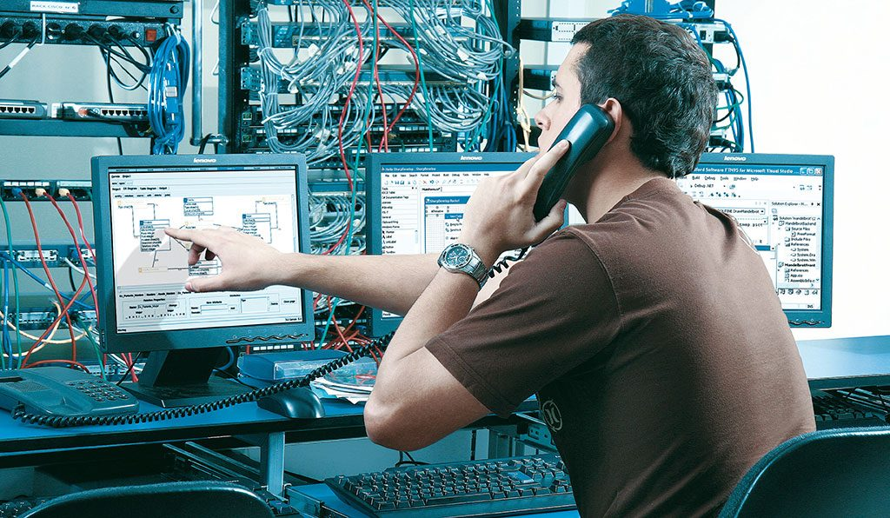

Técnico medio en Administración Financiera

El técnico medio dedicado a la administración financiera debe tener la capacidad de integrar las actividades administrativas y financieras de la organización a la cual pertenece, desarrollando, aplicando métodos para mejorar y velar por la optimación de los recursos físicos y financieros.
El Técnico medio en administración financiera tendrá la capacidad de:
- Aplicar las técnicas modernas de oficina dentro del mundo de los negocios.
- Analizar solicitudes presupuestarias.
- Calcular el retorno de la inversión.
- Planificar y programar partidas presupuestarias.
- Elaborar presupuestos en empresas públicas, privadas e institutos autónomos.
- Realizar cálculos de intereses y anualidades.
- Elaborar inventarios.
- Analizar las situaciones para tomar decisiones financieras.
- Aplicar los conocimientos básicos de informática.
- Aplicar instrumentos para la elaboración de nóminas.
- Realizar conciliaciones bancarias.
- Realizar operaciones de control de la caja chica.
- Realizar cálculos y declaraciones de I.S.L.R, IVA y otros tributos.
- Comprender y aplicar el vocabulario técnico básico del idioma inglés en las actividades relativas a su especialidad.
- Demostrar conocimientos de cultura general en áreas como: Matemáticas, Castellano, Historia, Geografía de Venezuela y Premilitar.
- Demostrar conocimientos básicos de investigación.
Técnico medio en Contabilidad
El técnico medio en contabilidad se encarga de hacer informes financieros que servirán para evaluar resultados en la empresa donde participan todos los accionistas, gerentes y contadores, así como debe prestar cualquier tipo de apoyo en el área contable y administrativa.
El Técnico medio en contabilidad tendrá la capacidad de:
- Cumplir las actividades prácticas propias de la oficina moderna.
- Analizar actividades financieras de la empresa.
- Participar en la organización de un departamento de contabilidad.
- Realizar prácticas y procedimientos contables de la empresa.
- Aportar ideas que beneficien la dirección y administración de la empresa.
- Manejar equipos de oficina.
- Aplicar software especializados en el área.
- Practicar con habilidades y destrezas para su incorporación en la sociedad como un ente productivo en beneficio de la comunidad.
- Manejar libros principales y auxiliares.
- Realizar arqueos y registros de efectivo de la empresa.
- Estudiar y registrar las cuentas por cobrar de la empresa.
- Registrar el IVA en asientos de libro diario.
- Practicar inventarios en forma periódica y continua.
- Preparar documentos mercantiles.
- Interpretar y analizar estados financieros.
- Comprender y aplicar el vocabulario técnico básico del idioma inglés en las actividades relativas a su especialidad.
- Demostrar conocimientos de cultura general en áreas como: Matemáticas, Castellano, Historia, Geografía de Venezuela y Premilitar.
- Demostrar conocimientos básicos de investigación.
Técnico medio en Telemática
También llamada Teleinformática, se trata de la asociación de técnicas propias de las telecomunicaciones y las tecnologías modernas Informáticas (Tecnologías de Información y Comunicaciones -TIC´s), que engloba el estudio, diseño, gestión y aplicación de las redes y servicios de comunicaciones, lo anterior para el transporte, almacenamiento y proceso de cualquier tipo de información; sin enfocarse a fondo en la parte técnica de la Electrónica.
El Técnico en Telemática tendrá la capacidad de:
- Instalar las redes locales en los dispositivos
- Instalar las redes Telemáticas
- Reparar cualquier avería que se encuentre en el puesto de trabajo
- Enseñar a los encargados de algunas aplicaciones o al traspaso de información a otro punto como se hace con un buen uso
- Sustituir en su caso a algunos profesionales,como por ejemplo el ténico instalador de redes o sistemas.Ya que tiene el mismo conocimiento
Técnico medio en Turismo
El Técnico Medio en Turismo ejecuta y coordina programas de turismo y promoción turística. Ejerce funciones de agente de turismo. Asiste y asesora a directivos de instituciones públicas y privadas, dedicada a la promoción turística. Supervisa y controla los servicios de hotelería para optimizar su funcionamiento.
El Técnico medio en Turismo tendrá la capacidad de:
- Manejar central telefónica.
- Atender y asistir a los clientes de las agencias de viajes.
- Crear y comercializar paquetes, rutas y circuitos turísticos.
- Realizar reservaciones vía telefónica e Internet en las líneas aéreas y hoteles.
- Manejar los sistemas de reservaciones: Sabres, Amadeus, Galileo.
- Construir tarifas sencillas y compuestas.
- Programar y realizar actividades protocolares dentro de los eventos.
- Programar y realizar actividades recreativas.
- Promocionar y mercadear los recursos turísticos municipales, estadales y nacionales.
- Participar en las actividades básicas de los establecimientos de alojamiento.
- Colaborar en las actividades de los departamentos en las relaciones públicas de las empresas.
- Manejar en forma oral y escrita un idioma extranjero (Inglés).
- Manejar ampliamente la geografía turística nacional, regional y local.
- Crear cooperativas y microempresas.
- Demostrar conocimientos de cultura general en áreas como: Matemáticas, Castellano, Historia, Geografía de Venezuela y Premilitar.
- Demostrar conocimientos básicos de investigación.
Técnico medio en Aduana

Es un profesional capacitado en la ejecución de actividades aduaneras y arancelarias tanto en el sector oficial como en el privado, todo esto relacionado con el área de comercio exterior. Formar un técnico medio en Aduana integral, con un desempeño eficaz y eficiente, utilizando la ciencia, la tecnología de avanzada y promoviendo el desarrollo endógeno local, regional y nacional, a partir de proyectos productivos donde demuestre competencias profesionales
El técnico medio en Aduana tendrá la capacidad de:
- Detecta los actos ilícitos aduanales.
- Tramita permisos de transporte de mercancías sobre la base del conocimiento de las diferentes formas y tipo de transporte en el comercio nacional e internacional.
- Domina la estructura organizativa de las aduanas y las empresas aduaneras del sector oficial y privado respectivamente.
- Realiza trámites aduaneros, aranceles y tributos de aduana, utilizando la documentación correspondiente.
- Emplea técnicas de clasificación para el cálculo de fletes y tarifas.
- Elabora proyectos factibles.
- Utiliza las nuevas tecnologías aplicadas al sector aduanero.
- Toma decisiones en la actividad aduanera.
- Ejecuta procesos administrativos relacionados con la exportación, importación, sistema legal y aduanal de las organizaciones privadas y públicas.
- Identifica, clasifica y ubica la mercancía.
- Domina las regulaciones de los distintos regímenes especiales (puerto libre, zona libre y zona franca).
- Realiza toda la tramitación sobre exportaciones.